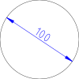

Diámetro
Barra de herramienta / icono:

Menú: Dimensión > Diámetro
Acceso directo: D, D
Comandos: dimdia | dimdiametric | dd
Esta es una traducción automática.
Barra de herramienta / icono:

Menú: Dimensión > Diámetro
Acceso directo: D, D
Comandos: dimdia | dimdiametric | dd
Crea una cota de diámetro para un círculo o arco.
